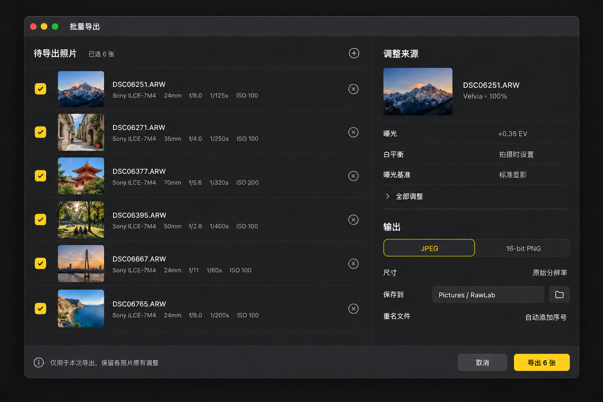
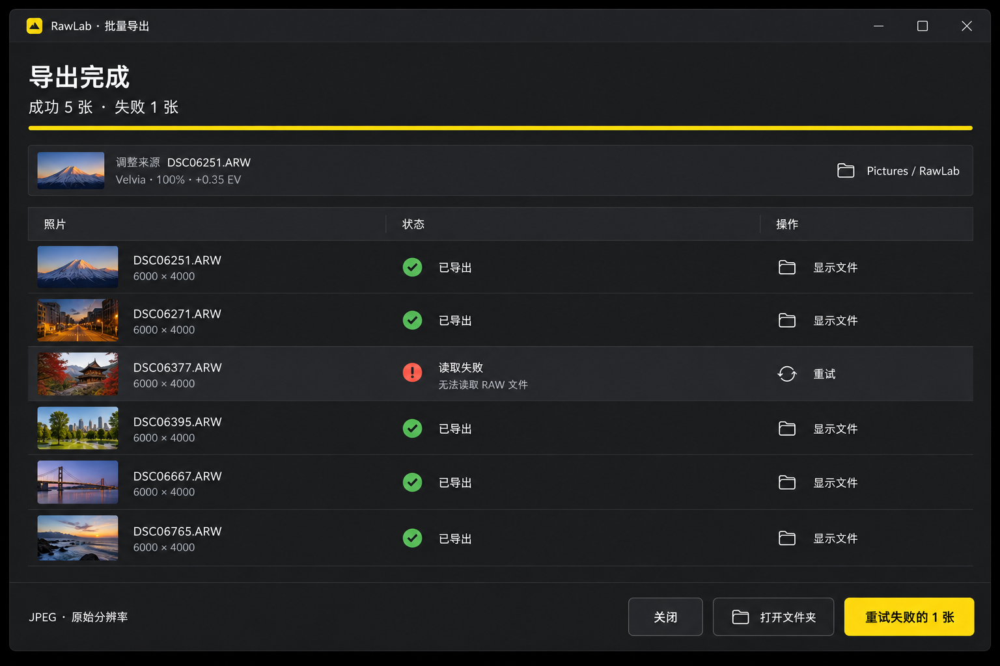
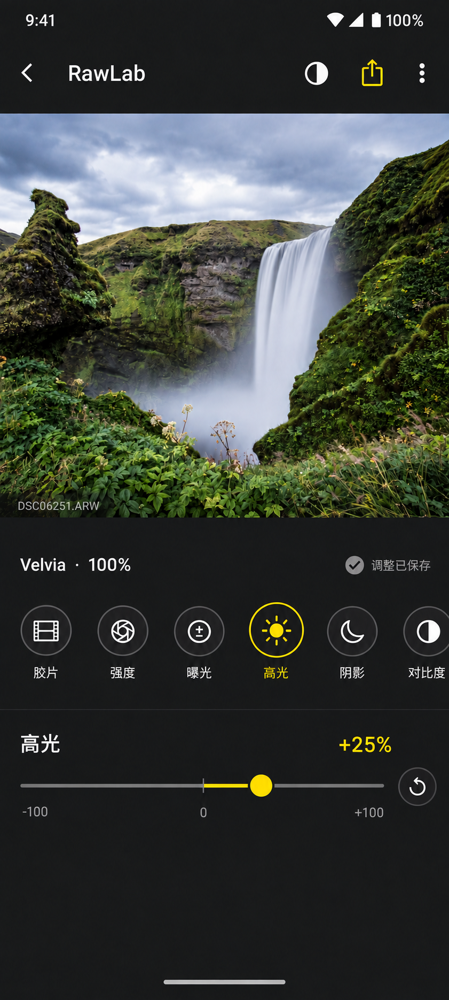
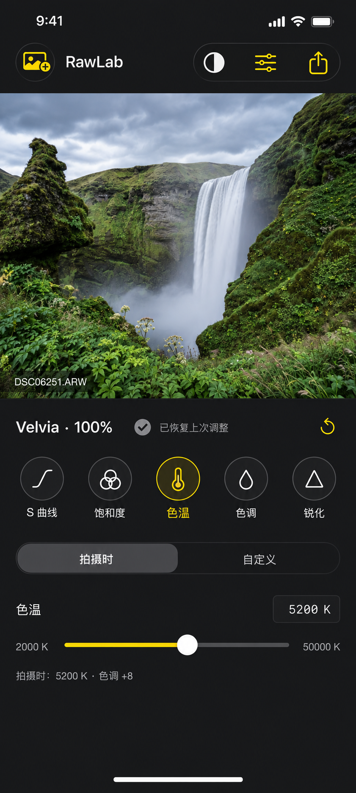
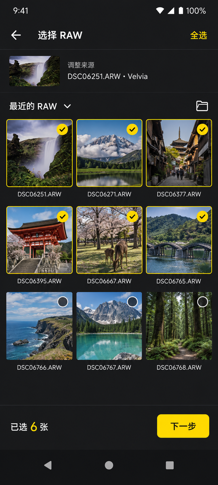
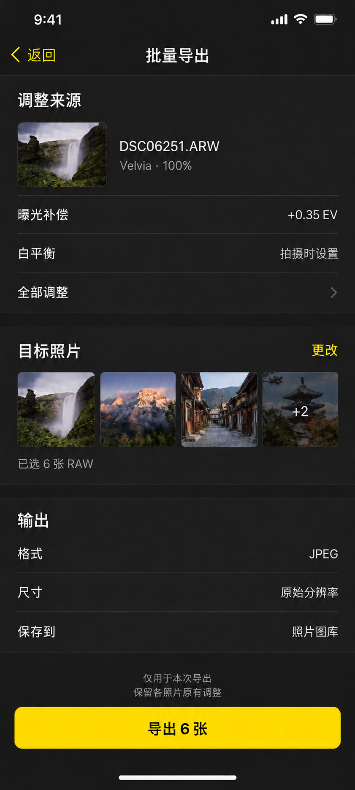

编辑并自动保存 → 使用当前调整批量导出 → 选择 RAW → 确认 → 处理与结果
四端遵循同一套任务规则，使用各自原生交互。当前照片是固定的调整来源；批量任务只生成新成片，不覆盖目标照片的调整记录。
Mac · 一页完成导出确认


Windows · 完成不掩盖失败


移动编辑器 · 记忆调整与参数对齐
Android · 补齐调整工具


全部 11 个工具在同一横向栏内：胶片、强度、曝光、高光、阴影、对比度、S 曲线、饱和度、色温、色调、锐化。仅当前项显示数值和滑杆。
iOS · 白平衡模式明确


拖动滑杆或输入数值即切换自定义；选择“拍摄时”恢复当前 RAW 的相机基准。自定义模式保留当前数值。缺少有效校准时保留相机白平衡，禁用不能可靠使用的数值控件。
移动批量流程 · 先选照片，再确认导出
Android · 批量选片


初次进入不预选。保留相册原有列数和方形/原始比例偏好，图稿以三列方形示例。“全选”仅作用于当前列表。返回不丢失本次选择，也不改变编辑器来源照片。
iOS · 导出确认


Android 复用信息顺序，但提供 JPEG / 16-bit PNG 和相册/目录选项。iOS 首版三个输出值只读。点“更改”返回选片，点缩略图查看目标，点“全部调整”展开完整只读参数。
状态与边界
| 状态 | 界面反馈与操作 |
|---|---|
| 自动保存 | 保存成功才显示“调整已保存”；快速连续调节时不反复闪动。重新打开显示“已恢复上次调整”，随后退回安静状态。 |
| 保存失败 | 持续显示带错误图标的“调整未保存”，提供重试。保留当前数值，不伪装成已完成。 |
| 外观丢失 | 保留设置，提示定位或重新选择外观；修复前不能以另一外观静默导出。 |
| 空选与读取失败 | 0 张时禁用下一步/导出。选后验证 RAW 可用性，不支持或不能读取的文件逐项解释，允许移除。 |
| 权限与空间 | 开始前检查保存权限。目录授权失效可重新选择；空间不足停止任务，保留已完成结果。 |
| 中断与恢复 | 前台批处理；保留任务记录。返回时显示“导出已中断”，用户选择继续未完成项，缺少照片访问权限时重新授权。 |
| 窄屏与大字号 | 正文和文件名可换行，数值不挤压标签。手机主要操作固定在安全区上方；横屏/大字号内容滚动，不把全部工具强塞进屏幕。 |
图稿只展示关键状态，不是可点击的真实导出功能。图片里的图标与细微像素由原生控件落实；功能规则和准确文案以 交互说明 为准。